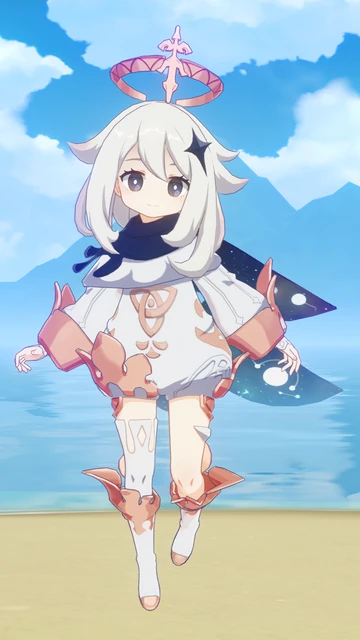

Teyvat & Unknown · Unanswered Mysteries
Paimon’s Origin: Community Theories
Paimon’s complete origin has not been confirmed in released story. This entry records the open question without presenting a theory as fact.

The Unanswered Riddle of the Traveler's Companion
Ever since the Traveler fished her out of the waters of Cider Lake at the very beginning of the journey, Paimon has served as an inseparable companion, navigator, and comedic food enthusiast. Despite her constant presence, she remains one of the most mysterious enigmas in all of Genshin Impact: she belongs to no known mortal species, remembers almost nothing of her own past, and is the only being in Teyvat who naturally floats through the air without wings, glider, or Vision.
While her childlike affection and fierce loyalty to the Traveler are unquestioned, scholars and community lore investigators have noted that Paimon's visual design, elemental mechanics, and symbolic motifs mirror the most powerful divine entities in the world.
Theory 1: Connection to the Sustainer and the Four Shades
The most enduring community hypothesis connects Paimon to Celestia and the Four Shining Shades of the Primordial One. Her crown-like hairclip forms a dark blue Primogem, her cape mirrors the starry celestial nebulae of the heavens, and her clothing features the classical golden embroidery and Triquetra symbols found on ancient celestial pillars and Domain entrances.
Many theorists point out her striking physical resemblance to the Sustainer of Heavenly Principles (Asmoday), speculating that Paimon may be a weakened, amnesiac manifestation or splinter of the Sustainer, or perhaps Istaroth, the Shade of Time. This is supported by gameplay mechanics: when players pause the game to adjust the in-game clock, Paimon continues to float and manipulate time while the rest of the world stands completely frozen.
Theory 2: The Last Sovereign Seelie
Another prominent theory posits that Paimon is the last surviving, uncorrupted member of the ancient Seelie race. Ancient lore states that the Seelies were once a radiant, wise humanoid civilization that possessed grand celestial palaces and guided humanity with profound knowledge, before a cosmic curse degraded them into the floating, mindless elemental wisps found wandering the wilderness today.
Proponents of this theory highlight Paimon's insatiable love for guiding travelers, finding treasure chests, and uncovering ancient paths, which matches the instinctual behavior of wild Seelies. Furthermore, like the ancient Seelies, Paimon exhibits an instinctive familiarity with ancient ruins, yet lacks the specific traumatic memories of the fall.
Distinguishing Canon from Speculation
It is essential to maintain strict clarity: as of the current game version, HoYoverse has not officially confirmed Paimon's true origins. Within canonical dialogue, she is simply 'Paimon'—the Traveler's best friend. Characters such as Albedo, Dainsleif, Zhongli, and Neuvillette have examined her closely, but while they acknowledge her strange nature, none have openly identified her as a threat.
Whether Paimon is a sleeping celestial god, a fallen shade, an ancient guide, or simply an extraordinary child of the stars, her unconditional love and unwavering devotion to the Traveler remain genuine. Her true identity will undoubtedly form one of the emotional centerpieces of the game's final chapters.
This is an original CoreGG reading guide, not an official HoYoverse article or a reproduction of the game text. Source links below identify the records used so you can check the original context.
Sources & references
Check these sources for the original game text and reference trail.